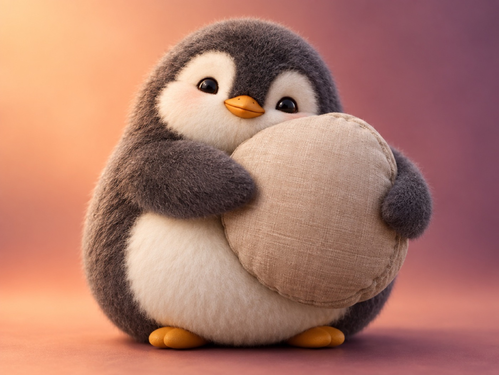

🧪 LAB · 試作 — AIが読書メモから一気に作った記事です。本番の一覧には出していません · 試作の一覧
🐧 EVERYDAY LIFE⚡ 42 SEC
Adding "sorry, but" makes it easier to ask or say no 🧸

Sound Familiar
Do you ever want to say no to a friend's invitation, but find it hard to say?
It is said that we cannot ask or say no because we are afraid of making the other person feel bad.
The Point
At times like that, try adding "Sorry, but" or "I'm very sorry, but" at the start.
The Reason
This is because these words make your words soft, like a cushion.
The other person also feels, "It is hard to say, but they are thinking of me."
For Example
For example, instead of "I'll go home today," say "Sorry, but I'll go home first today."
Just this makes it much easier to say.
⚡ TRY IT
The courage meter
🎉 Say no to a party
🔌 Ask to borrow a charger
🏠 Go home first
"I can't come today."
"Can I borrow your charger?"
"I'll go home now."
"Sorry, but I can't come today."
"Sorry, but can I borrow your charger?"
"Sorry, but I'll go home now."
🔋 Courage: 0/10
Tap 🔋 until the meter is full. Saying it plain is hard!
With "Sorry, but," it feels lighter. Tap 🔋!
😓 You said it! But it took 10 taps of courage. Next, turn on 🧸 and try.
😌 You said it with only 4 taps! The other penguin smiled, too.
💡 With "Sorry, but," you needed much less courage!
Try This
Next time you say no to something, start with "Sorry, but."
With a small cushion, you can say hard things too.
📚 I wrote this from my reading notes.